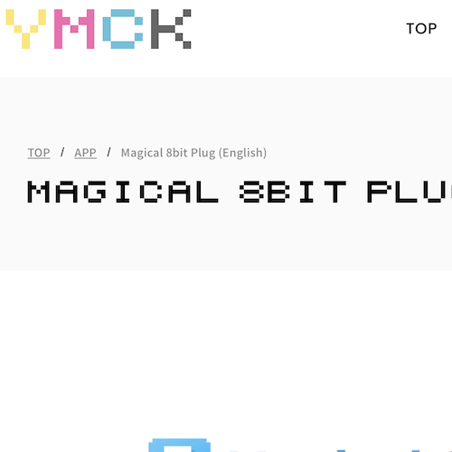

Magical 8bit Plug
Perma🔗 (via Shaun Inman)

An easy way to make your own 8-bit tunes. This handy plugin easily incorporates into GarageBand - select your instrument, edit it, select magical8bitPlug as the sound generator, and you've got instant 8 bit power. Pair this up with the discovery of Audio Overload (a respectable OS X video game music player). Although AO is nowhere near as good as what I discussed before, the combination of all these things has me hearing/playing/making/editing 8-bit sounding music.